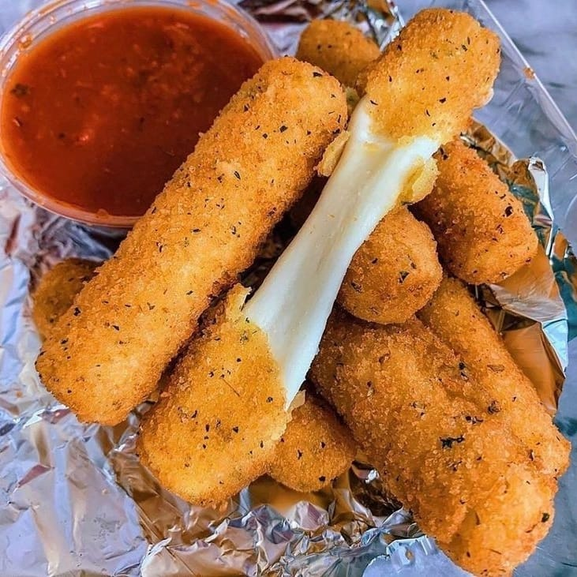
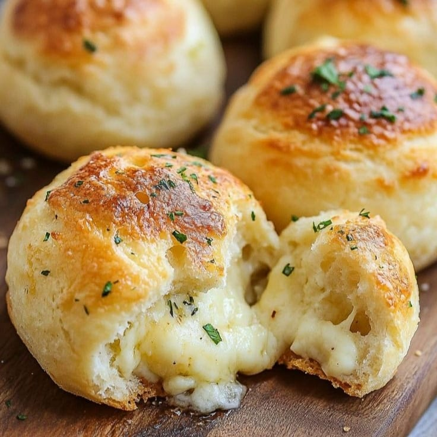
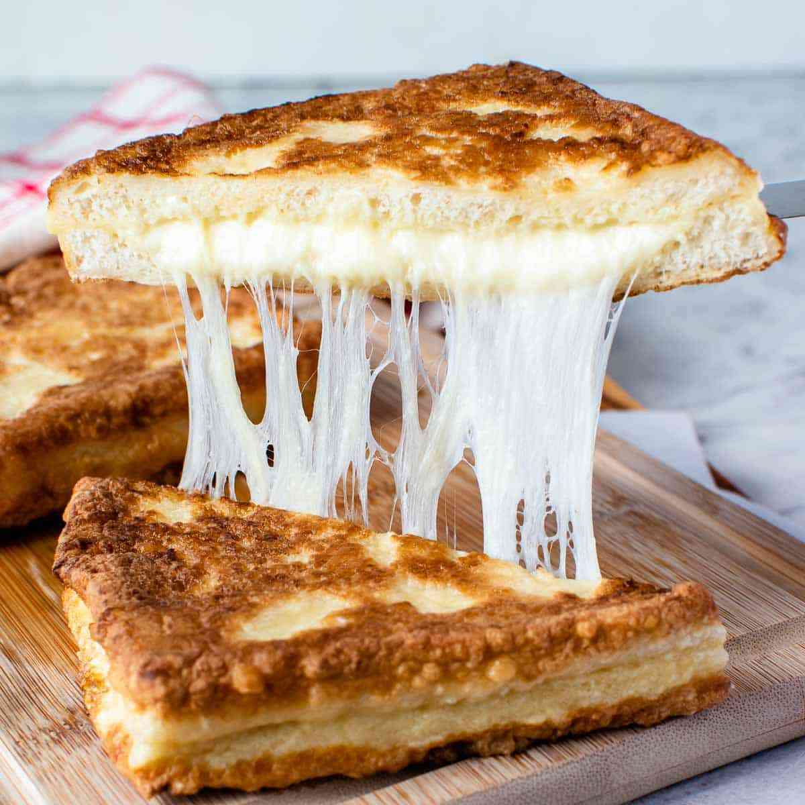

1. Mozzarella Stick

Bahan-Bahan
- 250 gram keju mozzarella (potong memanjang)
- 100 gram tepung terigu
- 2 butir telur (kocok lepas)
- 150 gram tepung roti/panko
- Minyak goreng secukupnya
Cara Membuat
1. Gulingkan potongan mozzarella ke dalam tepung terigu hingga merata.
2. Celupkan ke dalam telur kocok, lalu balur dengan tepung roti.
3. Simpan di dalam freezer selama 15-20 menit.
4. Goreng dalam minyak panas hingga kuning keemasan. Sajikan dengan saus sambal atau saus tomat.
2. Corn Dog Mozzarella
Bahan-Bahan
- 200 gram keju mozzarella (potong balok)
- 200 gram tepung terigu
- 1 sdt baking powder
- 100 ml susu cair
- 1 butir telur
- 2 sdm gula pasir
- Tusuk sate
Cara Membuat
1. Campur tepung terigu, baking powder, gula pasir, susu cair, dan telur hingga menjadi adonan kental.
2. Tusuk keju mozzarella dengan tusuk sate, lalu celupkan ke dalam adonan hingga tertutup rata.
3. Goreng dalam minyak panas hingga kuning kecokelatan. Sajikan dengan saus favorit.
3. Mozzarella Ball Goreng

Bahan-Bahan
- 200 gram keju mozzarella (potong kecil-kecil)
- 200 gram kentang (kukus dan haluskan)
- 100 gram tepung terigu
- 2 butir telur (kocok lepas)
- Tepung roti secukupnya
- Minyak untuk menggoreng
Cara Membuat
1. Campur kentang halus dengan sedikit garam dan lada. Ambil sedikit adonan, pipihkan, isi dengan potongan mozzarella, lalu bulatkan.
2. Celupkan bola kentang ke dalam tepung terigu, telur, lalu tepung roti.
3. Goreng dalam minyak panas hingga renyah. Angkat dan sajikan.
4. Pizza Mini Mozzarella

Bahan-Bahan
- 200 gram adonan roti pizza (bisa beli siap pakai)
- 100 gram keju mozzarella parut
- 50 gram saus tomat atau saus pizza
- Topping sesuai selera (sosis, jamur, paprika)
Cara Membuat
1. Bentuk adonan pizza menjadi bulatan kecil.
2. Olesi dengan saus tomat, tambahkan topping, dan taburi mozzarella.
3. Panggang dalam oven suhu 180°C selama 10-15 menit hingga keju meleleh. Sajikan hangat.
5. Roti Panggang Mozzarella

Bahan-Bahan
- 4 lembar roti tawar
- 100 gram keju mozzarella parut
- 2 sdm mentega
- Saus tomat atau sambal
Cara Membuat
1. Olesi roti tawar dengan mentega.
2. Taburi mozzarella di atas roti, lalu tumpuk dengan roti lainnya.
3. Panggang di atas teflon hingga keju meleleh dan roti berwarna kecokelatan.
4. Sajikan dengan saus favorit.